A pocket is defined as a space where small probe S can enter, but a large probe P cannot.
Standard Usage
ghecom -M P -ipdb [input_pdbfile] -opocpdb [output_pocket_grid_pdbfile]
For example, to find the pocket for the pdbfile "3wz8":
ghecom -M P -ipdb pdb3wz8.ent -opocpdb 3wz8_pock.pdb
Options for input PDB file are summarized elsewhere.
Options for grid pocket calculation:
-gw: Grid width [0.800000]-rs: Radius for small probe spheres [1.870000]-rl: Radius for large probe spheres [6.000000]-clus: clustering pockets ('T' or 'F') [T]
Options for output
-opocpdb: Output file for Grid Points of Pocket in PDB[]If
-clus T, the rank of clusters are described in residue number and model number in the PDB file.-opocmap: Output file for Pocket in 3D density map (*.map) []If
-clus F, only one map is generated. If-clus T, each cluster is written in a separated map file. For example, the options-clus T-opocmap out.mapare assigned and 4 pocket clusters are identified, then the 4 files,out_1.map,out_2.map,out_3.map, andout_4.mapare generated.-opdb: Output receptor PDB file with Cluster Number[]
Options to obtain spherical (non-grid) probes:
-oprb: Output PDB file for 3-contacting spherical probes []-oprd: Output PDB file for 3-contacting spherical probes in DOCK sphere format []
|
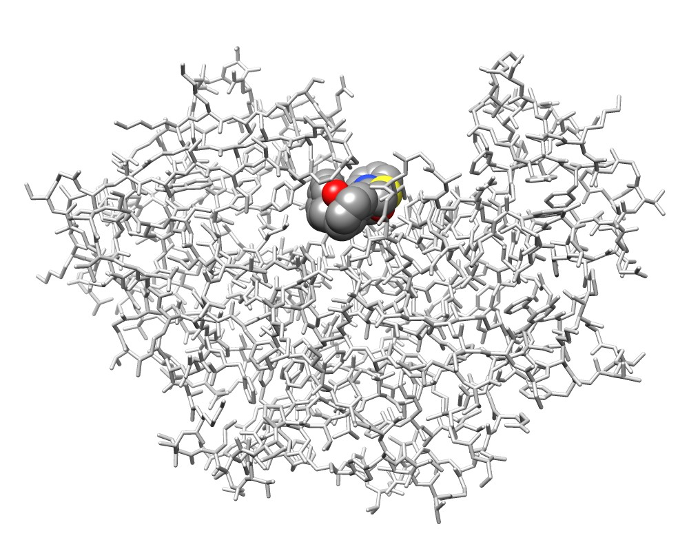 3wx8 chain A and the ligand IXV |
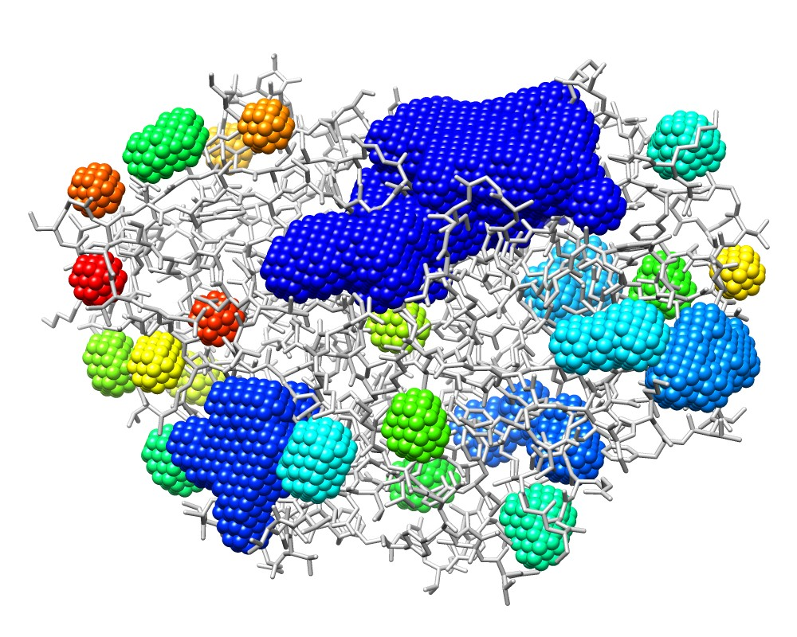 3wx8_P.pdb colored by model number |
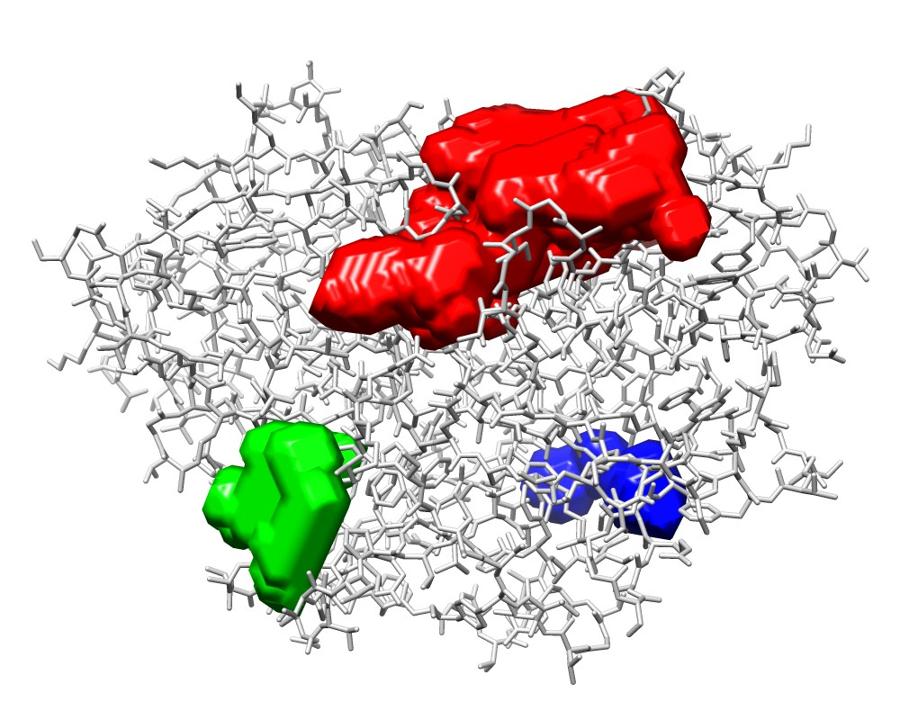 3wx8_P_1.map(red), 3wx8_P_2.map(green), and 3wx8_P_3.map(blue) |
COMMAND: ghecom -M P -ipdb pdb3wz8.ent -ch A -rs 1.87 -rl 10.0 -opocpdb 3wz8_P.pdb -opocmap 3wz8_P.map
rendered by UCSF Chimera |
||
A multi-scale pocket is defined using K large probes {Pk}.
Standard Usage
ghecom -M M -ipdb [input_pdbfile] -opocpdb [output_multi_scale_pocket_grid_pdbfile]
ghecom -M M -ipdb [input_pdbfile] -opocpdb [output_multi_scale_pocket_grid_pdbfile] -opdb [out_receptor_file_with_Rinaccess]
For example, to find the multi-scale pocket for the pdbfile "3wz8":
ghecom pdb3wz8.ent -M M -opoc 3wz8_multi_pock.pdb -opdb 3wz8_multi_recep.pdb
Options for input PDB file are summarized elsewhere.
Other options are summarized as follows( A string in the blackets [] is the default value):
-gw: Grid width [0.800000]-rs: Radius for small probe spheres [1.870000]-rli: Radius for min_large probe spheres [2.000000]-rlx: Radius for max_large probe spheres [10.000000]-br: bin of large probe radius for MODE 'M' [0.500000]-clus: clustering pockets ('T' or 'F') [T]
Output options as follows:
-opocpdb: Output Pocket in PDB file[].
Residue number and tFactor indicate the size of large probe (i in P[i]). Chain ID and MODEL number indicate the index of the pocket clusters.-opocmap: Output Pocket in 3D density map file (*.map) [].
A density values indicate the size of large probe (i in P[i]).-opdb: Output receptor PDB file[]
Pocketness are described as tFactor.-ores: Output Rediue-based property file with calculated Rinaceess/Pocketness[]
If a user wants to calculate the Rinaccess(shallowness) value for binding ligands, following two options should be added.
-iligpdb: Input ligand PDB file for Rinaccess calculation (only for MODE 'M') []-oligpdb: Output ligand PDB file with calcualted Rinaccess (only for MODE 'M') []
Options to obtain spherical (non-grid) probes:
-oprb: Output PDB file for 3-contacting spherical probes []-oprd: Output PDB file for 3-contacting spherical probes in DOCK sphere format []
|
3wx8 chain A and the ligand IXV |
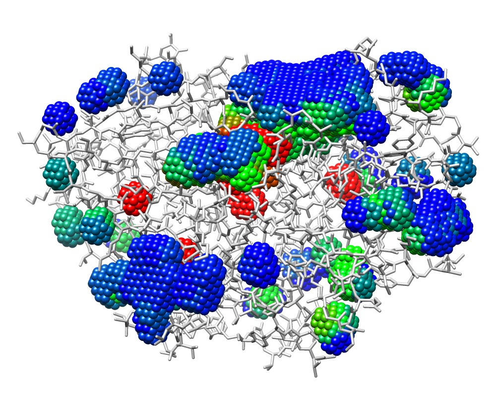 3wx8_M.pdb colored by bfactor (depth) |
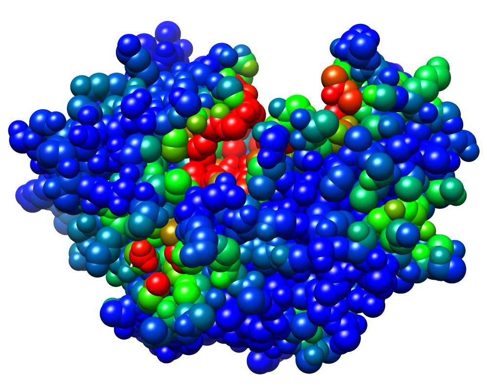 3wx8_M_rec.pdb colored by bfactor (pocketness) |
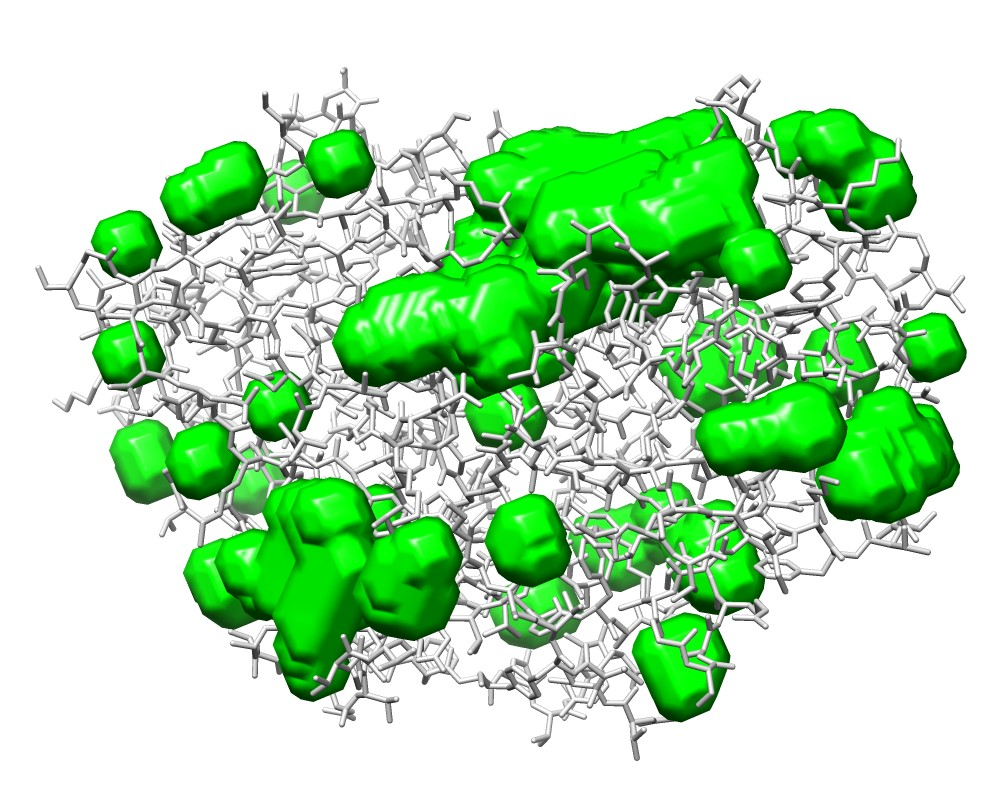 3wx8_M.map |
COMMAND:
ghecom -M M -ipdb pdb3wz8.ent -ch A -opocpdb 3wz8_M.pdb -opocmap 3wz8_M.map -opdb 3wz8_M_rec.pdb -ores 3wx8_M_res.txt
rendered by UCSF Chimera |
|||
|
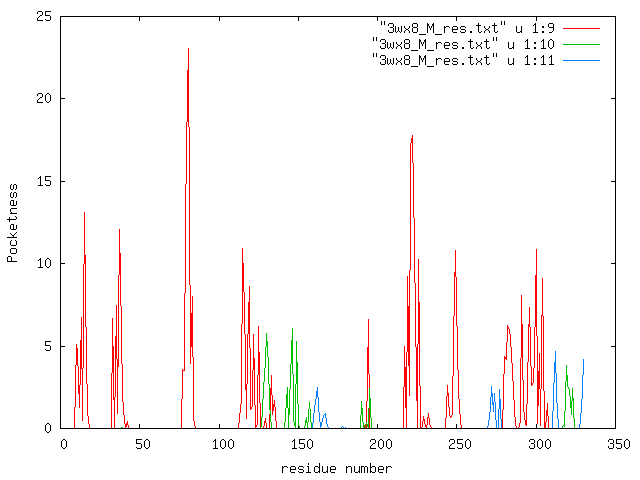 Residue-based pocketness drawn from "3wx8_M_res.txt". red: 1st largest cluster, green:2nd largest cluster, blue 3rd largest cluster. |
The "cavity" is difined as the space where a probe P cannot enter from outside.
Its standard usage is as follows:
ghecom -M V -ipdb [pdbfile] -rl [radius_of_probe] -opocpdb [cavity grid file in PDB]
For example, to find the cavity for the water in the pdb "1mbd":
ghecom -M V -ipdb pdb1mbd.ent -M V -rl 1.4 -gw 0.5 -opocpdb cavity_grid.pdb
For another example, to find the big cavity for the GroEL/ES (PDBID:1aon):
ghecom -M V -ipdb pdb1aon.ent -M V -rl 20 -gw 4.0 -opocpdb cavity_grid.pdb
Options for input PDB file are summarized elsewhere.
Options for grid pocket calculation:
-gw: Grid width [0.800000]-rs: Radius for small probe spheres [1.870000]-rl: Radius for large probe spheres [6.000000]-clus: clustering pockets ('T' or 'F') [T]
Options for outputs
-opocpdb: Output Pocket in PDB file[]-opocmap: Output Pocket in 3D density map file (*.map) []-opdb: Output receptor PDB file with Cluster Number[]
The "cave pocket" is difined as the space where an internal probe S can enter, but an external probe P cannot enter from outside.
Its standard usage is as follows:
ghecom -M CP -ipdb [pdbfile] -rl [radius_of_external_probe] -rs [radius_internal_robe] -opocpdb [cavity grid file in PDB]
For example, to find the big innner pocket for the GroEL/ES (PDBID:1aon):
ghecom -M CP -ipdb pdb1aon.ent -M CP -rl 25 -rs 10 -gw 4 -opocpdb pockgrid.pdb
For another example, to find the small binding pocket for the AMP (PDBID:12as):
ghecom -M CP -ipdb pdb12as.ent -ch A -gw 1.0 -rl 3 -rs 1.87 -opocpdb poc.pdb
The options for the cavepocket are quite similar to those for the pocket.
Options for input PDB file are summarized elsewhere.
Options for grid pocket calculation:
-gw: Grid width [0.800000]-rs: Radius for small probe spheres [1.870000]-rl: Radius for large probe spheres [6.000000]-clus: clustering pockets ('T' or 'F') [T]
Options for outputs:
-opocpdb: Output Pocket in PDB file[]-opocmap: Output Pocket in 3D density map file (*.map) []-opdb: Output receptor PDB file with Cluster Number[]
|
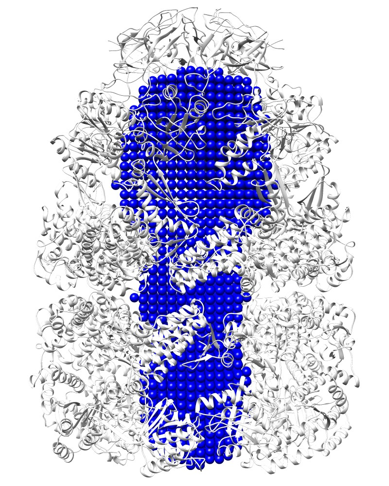 Cavity:Rlarge=20 [1aon_V.pdb] |
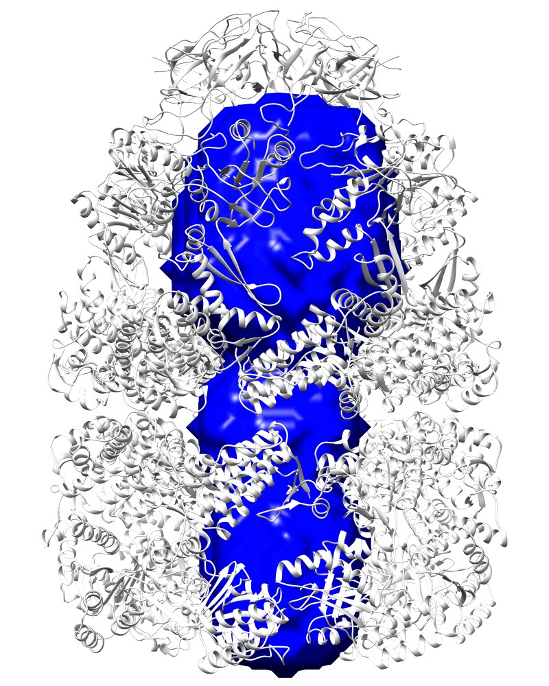 Cavity:Rlarge=20, [1aon_V.map] |
COMMAND:
ghecom -M V -ipdb pdb1aon.ent -gw 4.0 -rl 20 -clus F -opocpdb 1aon_V.pdb -opocmap 1aon_V.map
|
|
 Pocket:Rlarge=25, Rsmall=10 [1aon_P.pdb] |
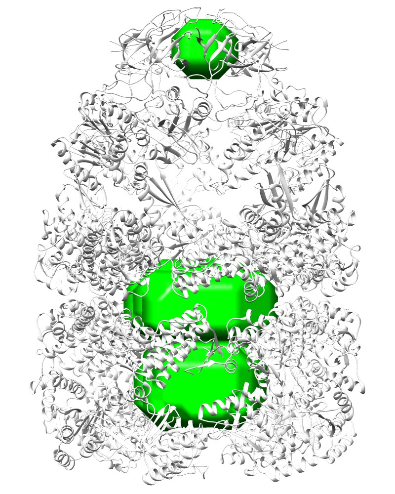 Pocket:Rlarge=25, Rsmall=10 [1aon_P.map] |
COMMAND:ghecom -M P -ipdb pdb1aon.ent -gw 4.0 -rl 25 -rs 10 -clus F -opocpdb 1aon_P.pdb -opocmap 1aon_P.map
|
|
|
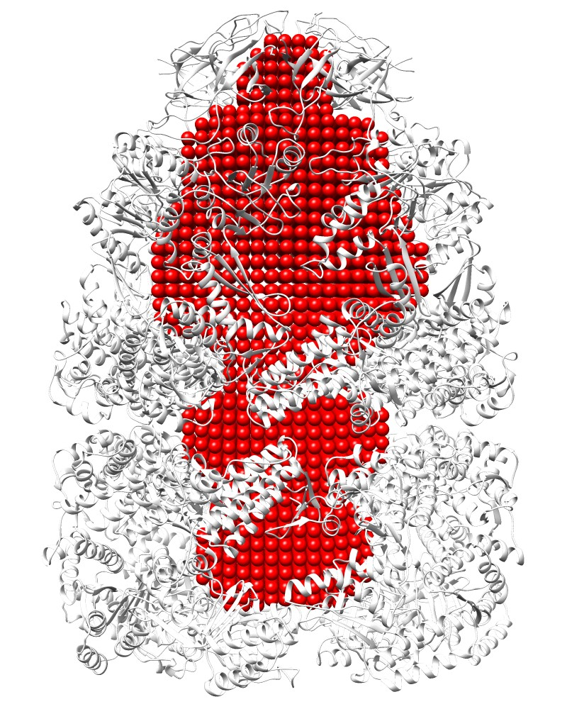 Cave Pocket:Rlarge=25, Rsmall=10 [1aon_CP.pdb] |
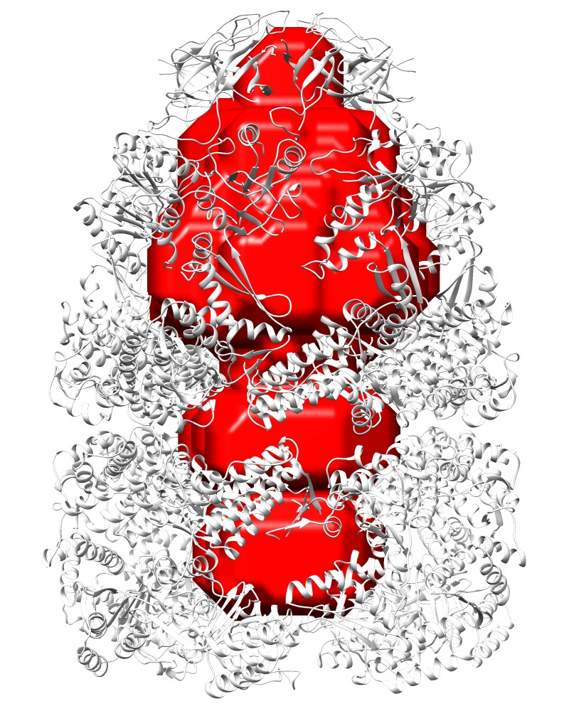 Cave Pocket:Rlarge=25, Rsmall=10 [1aon_CP.map] |
COMMAND:ghecom -M CP -ipdb pdb1aon.ent -gw 4.0 -rl 25 -rs 10 -clus F -opocpdb 1aon_CP.pdb -opocmap 1aon_CP.map
rendered by UCSF Chimera |
|